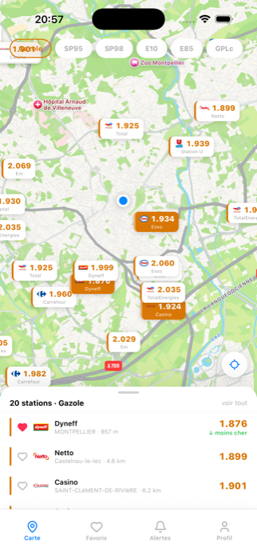
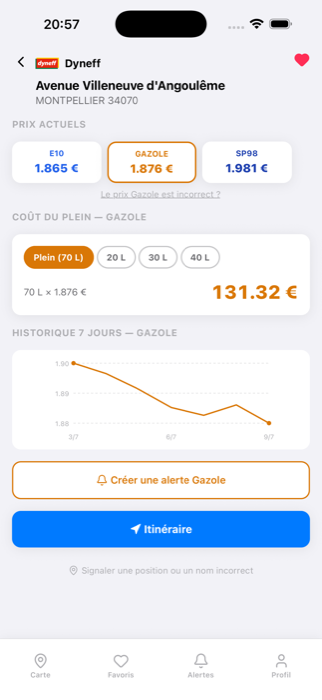
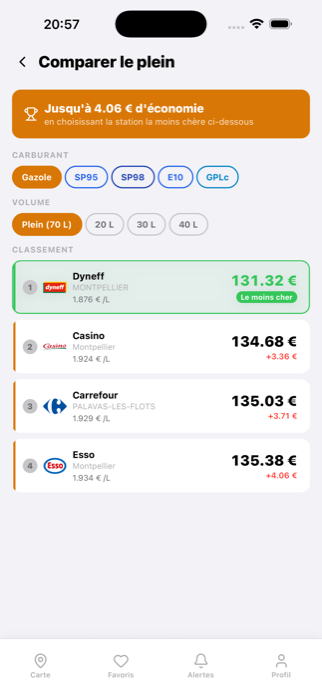

Disponible sur iPhone
Le carburant au
meilleur prix, partout en France
Carbu compare en temps réel les prix de plus de 10 000 stations-service — Gazole, SP95, SP98, E10, E85, GPL — à partir des données officielles du gouvernement. Trouvez la station la moins chère, gardez un œil sur vos favorites, payez moins cher à chaque plein.
Télécharger surl'App Store



Trouvez la station la moins chère
Carte interactive et liste triée par prix ou distance, prix affichés directement sur chaque station, ruptures de stock signalées en direct.
Gardez un œil sur vos favorites
Enregistrez vos stations habituelles, comparez leurs prix d'un coup d'œil sur la carte, signalez un prix incorrect en un geste.
Avec Carbu Pro, économisez encore plus
Widget sur l'écran d'accueil, alertes de baisse de prix, historique 7 jours, calculateur de plein et comparaison entre vos stations favorites. 7 jours d'essai gratuit.
Faites le plein au meilleur prix
Carbu est disponible dès maintenant sur l'App Store.
Télécharger surl'App Store